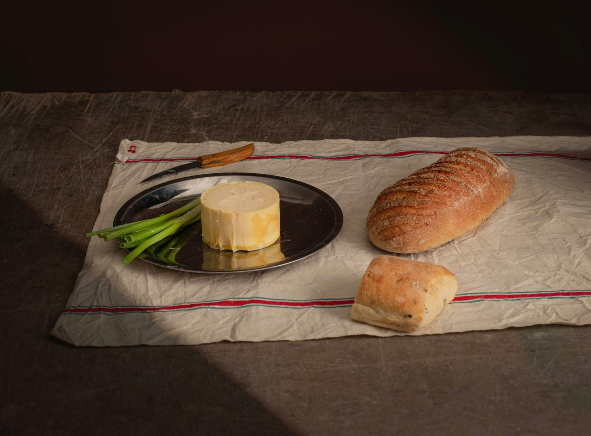
Casseneuil · Lot-et-Garonne · depuis 1981
Foie gras Quillot
Canards élevés et gavés en France, préparés à la main dans notre atelier.


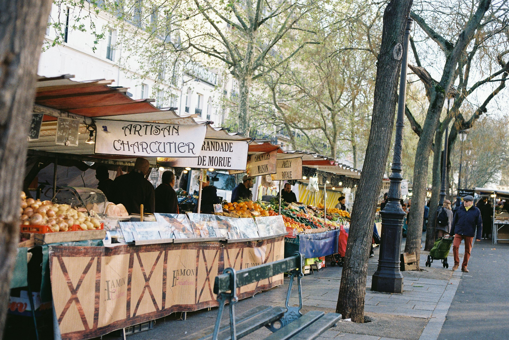
Tout a commencé en 1981 à la ferme des Barrails, quand Daniel Quillot a lancé la production de canards et d’oies. Sa grand-mère lui a transmis la rillette pur canard, une recette que les conserveries modernes ont presque abandonnée.
Aujourd’hui, Thierry, son neveu, tient l’atelier avec la même exigence : la viande est retirée à la main, assaisonnée, puis mise en boîte. Même chose pour le foie gras, les pâtés, les confits et le cassoulet.
Notre histoire
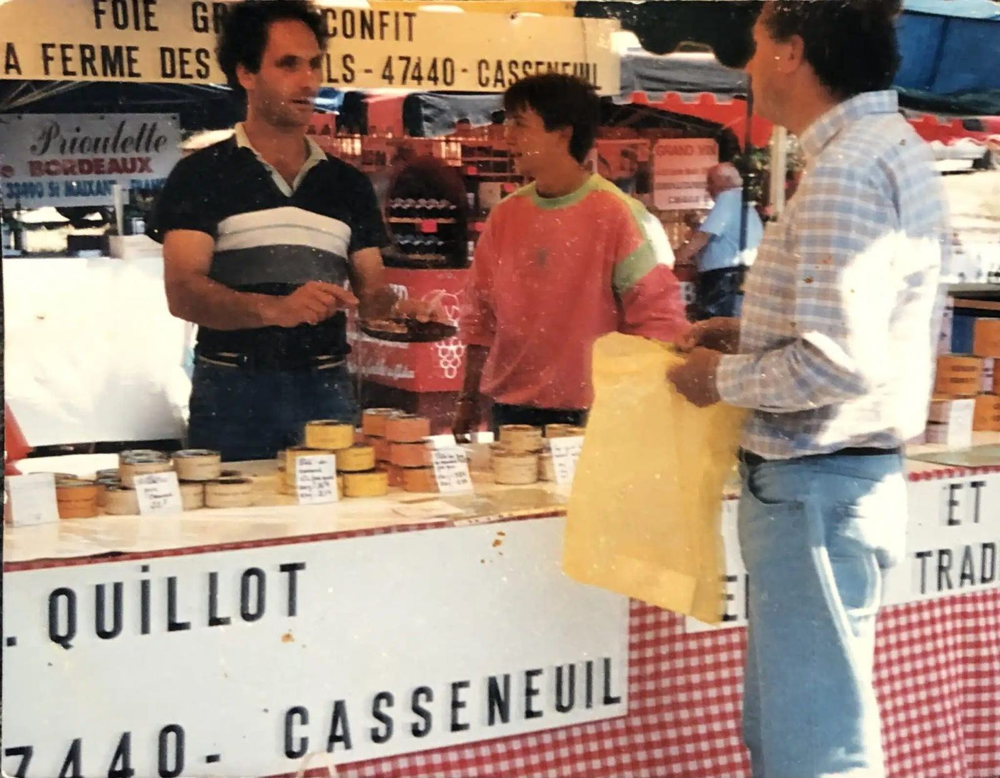
Plus de quarante ans de marchés, d’atelier et de recettes transmises.
Daniel, fils de M. et Mme Quillot, démarre la production de canards et d’oies. Les premières ventes se font sur les marchés de Bergerac et de Ribérac.
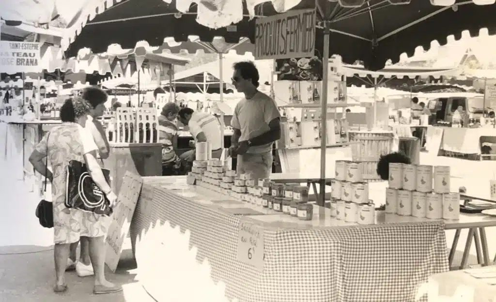
La ferme des Barrails prépare ses premières conserves. Montalivet d’abord, puis Soulac-sur-Mer en 1983.
Naissance de la SARL Les Barrails « Foie Gras Quillot » et construction d’un laboratoire aux normes européennes, pour vendre aux restaurateurs et aux magasins.
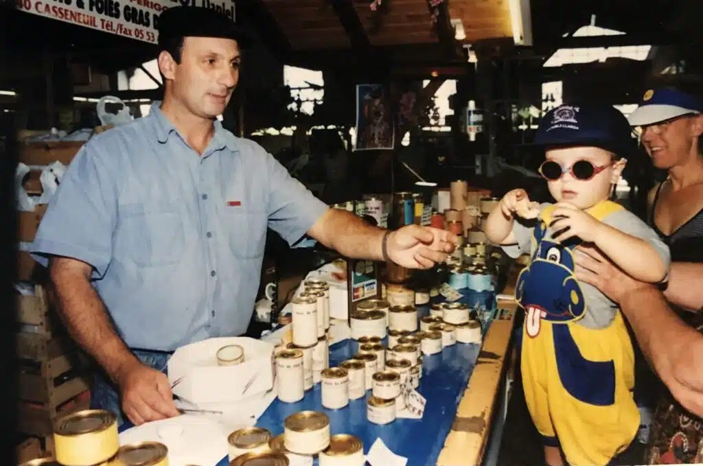
Le 6 décembre, l’entreprise s’installe sur le marché de Royan. Le marché rouvre le 3 juin 2024 après rénovation.
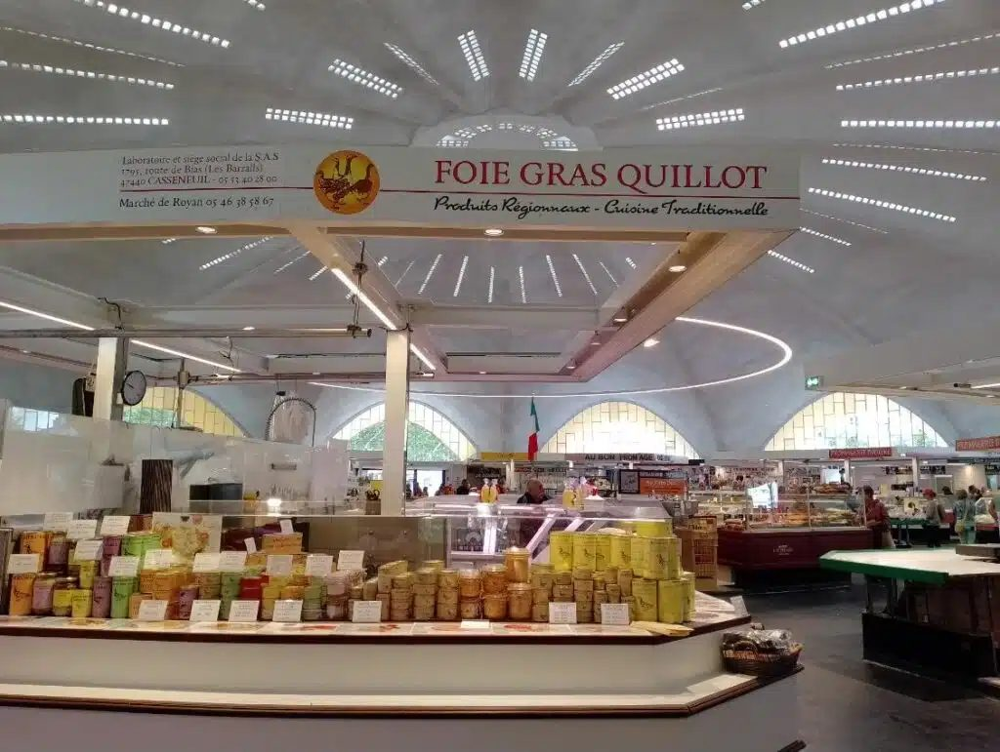
Arrivée sur le marché de Claouey, à Lège-Cap-Ferret. En 2018, ce sera celui d’Andernos-les-Bains.
Daniel prend sa retraite. La SAS Foie Gras Quillot voit le jour, la famille reprend le flambeau.
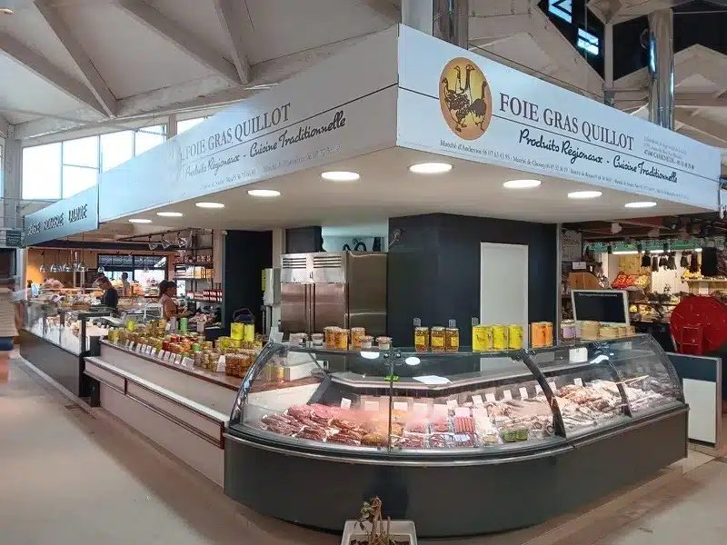
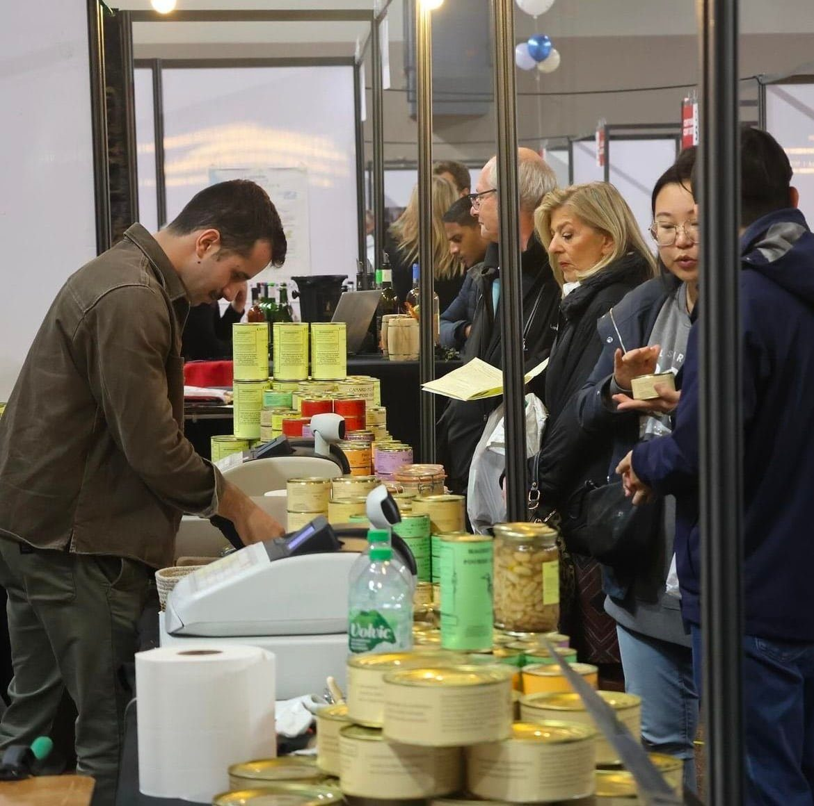
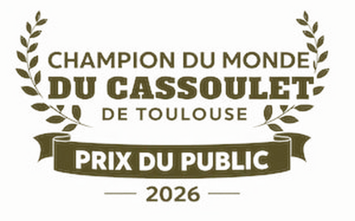
En boîte ou en bocal, selon le poids. À sortir du frais une heure avant de servir.
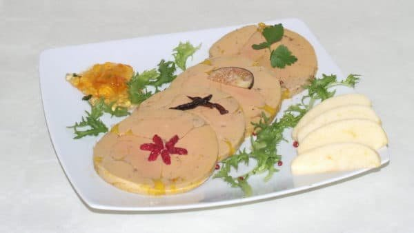
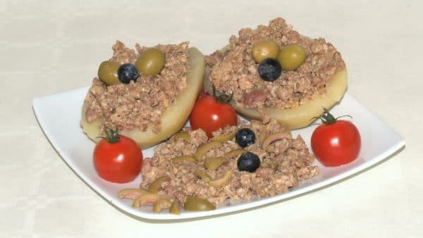
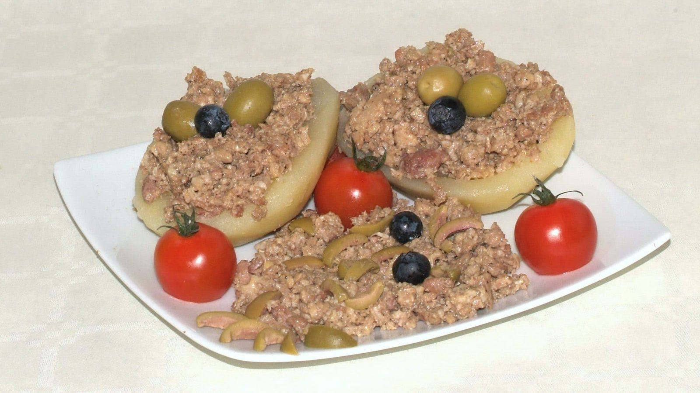

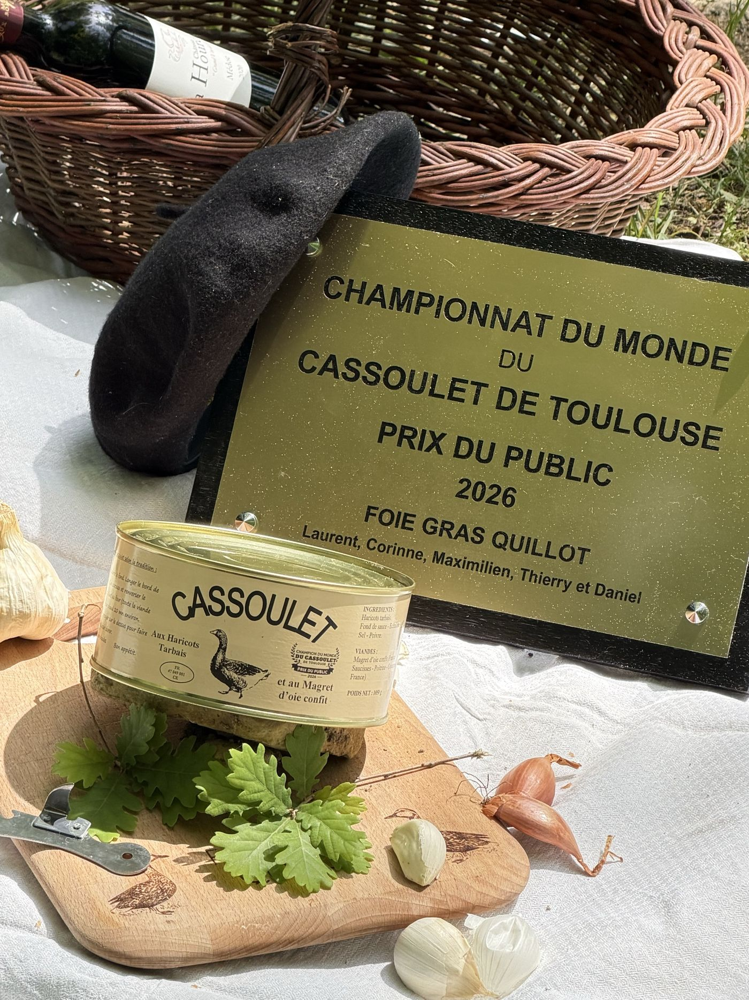
Le public a voté : le cassoulet de la maison Quillot, aux haricots tarbais, a reçu le prix du public au championnat du monde du cassoulet de Toulouse.
Goûter le cassouletDu Bassin d’Arcachon à Royan, on vous attend derrière l’étal. Pour une commande ou une question, appelez directement le point de vente.
Ouvert toute l’année, le matin, du mardi au dimanche
Été tous les jours en juillet-août, plus les soirs de 18h à 20h
Ouvert toute l’année, de 8h à 13h, sauf le lundi
Ouvert toute l’année, le matin, du mardi au dimanche
Été tous les jours en juillet, août et septembre, plus les soirs de 18h à 20h
Ouvert tous les matins, de mi-juin à mi-septembre
Ouvert tous les matins en juillet et en août
1795 route de Bias, 47440 Casseneuil
Ouvert du lundi au vendredi, 8h–12h et 14h–17h
À cuisiner avec nos produits : chaque recette propose directement ce qu’il faut.
 Plat
PlatAvec Cassoulet aux haricots tarbais39,60 €
ApéritifAvec Bloc de foie gras de canard · 200 g23,80 €
 Entrée · Fêtes
Entrée · FêtesAvec Foie gras de canard mi-cuit · 280 g bocal42,00 €
PlatAvec Confit de canard · 3 cuisses24,50 €
Avec Rillettes pur canard18,50 €
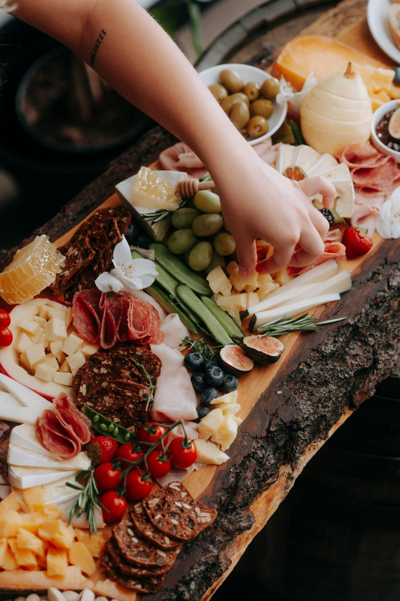
ApéritifAvec Rillettes pur canard18,50 €
 Entrée
EntréeAvec Gésiers d’oie confits17,80 €
 Fêtes · Entrée
Fêtes · EntréeAvec Foie gras de canard entier · 380 g52,80 €
 Apéritif
ApéritifAvec Pâté de sanglier · 200 g8,40 €